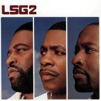

Walk of Fame
The Hollywood Walk of Fame honoring Luther Vandross
Recording Studio
A younger Johnny Gill in a Recording Session
In Concert
Johnny Gill performing in concert
2016 Essence Festival
Johnny Gill Performing with New Edition at 2016 Essence Festival - Day 1
Quality Time with Son
Johnny Gill with his son, Isiah
Still Winning
Johnny Gill's Still Winning Album
Harmonizing with LSG

Second Album Cover for LSG
Retirement Party
Johnny Gill at the retirement party for BET Chairman
Robert L. Johnson
At the Movies
Johnny Gill attends a Tyler Perry Movie Premiere